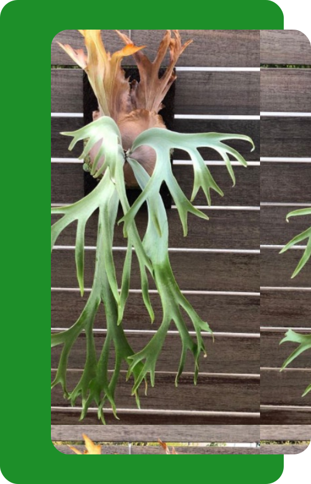
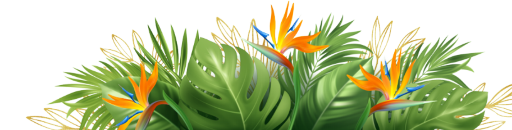

Hiasi Rumah Anda Dengan Keanggunan Asli Platycerium.
PLATY.ID hadir untuk mempermudah para kolektor dan pecinta tanaman hias dalam menemukan dan memiliki beragam jenis tanaman yang mereka idamkan.
Temukan PlatyceriumPRODUK
Platycerium Wandae

- Front: Front Platycerium wandae lebar dan bercabang, memberinya penampilan yang khas seperti tanduk rusa. Mereka dapat tumbuh cukup besar, dengan tanaman dewasa menghasilkan frond yang dapat memanjang beberapa kaki.
- Tekstur: Front biasanya tebal dan berkulit, dengan tekstur mengkilap atau mati tergantung pada kondisi lingkungan.
- Warna: Front sering memiliki warna hijau yang cerah, meskipun ini dapat bervariasi tergantung pada faktor seperti paparan cahaya dan tingkat kelembaban.
- Shield Front: Seperti anggota genus Platycerium lainnya, Platycerium wandae juga menghasilkan frond pelindung basal, yang berfungsi sebagai penutup pelindung untuk akar dan membantu menancapkan tanaman ke substratnya.
Platycerium Elephantotis
- Front: Front Platycerium elephantotis memiliki bentuk yang khas, dengan frond yang memanjang dan bercabang seperti tanduk. Biasanya, frond ini memiliki ukuran yang cukup besar dan dapat mencapai panjang yang mengesankan.
- Tekstur: Front biasanya memiliki tekstur yang tebal dan berkulit, memberikan kesan tangguh dan kokoh.
- Warna: Front Platycerium elephantotis cenderung memiliki warna hijau yang cerah, sering kali dengan sedikit nuansa perak atau abu-abu pada bagian bawahnya.

Platycerium Wilinckii

- Front: Front Platycerium wilinckii memiliki bentuk yang khas dengan frond yang lebar dan berbentuk seperti tanduk rusa yang bercabang. Front-front ini tumbuh ke arah luar dan menciptakan tampilan yang mencolok.
- Tekstur: Front Platycerium wilinckii biasanya tebal dan berkulit, memberikan kesan tangguh dan tahan lama.
- Warna: Front sering memiliki warna hijau yang cerah dengan sedikit nuansa abu-abu atau perak terutama pada bagian bawah frond.

LAYANAN KAMI
Platycerium Menghias Rumah dengan Pesona Alam